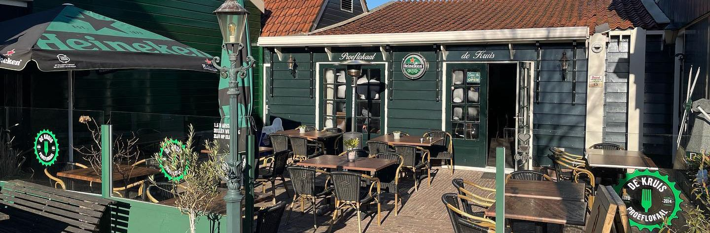
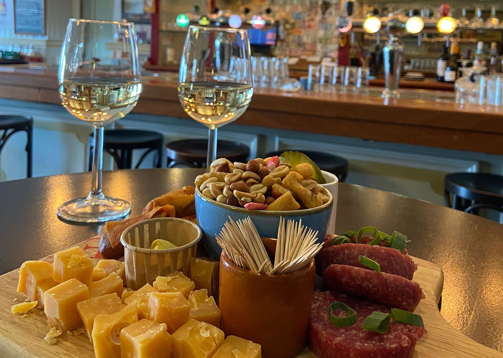
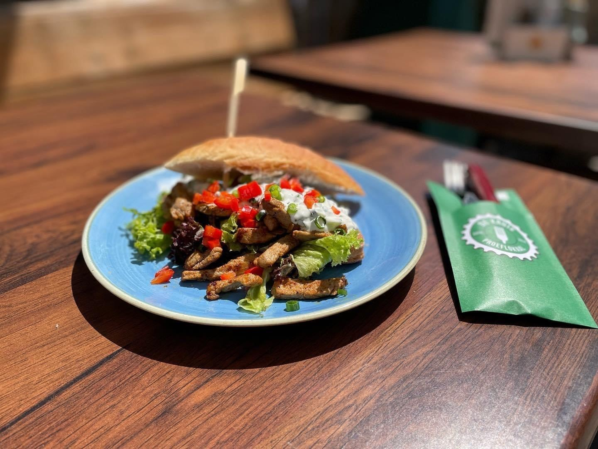
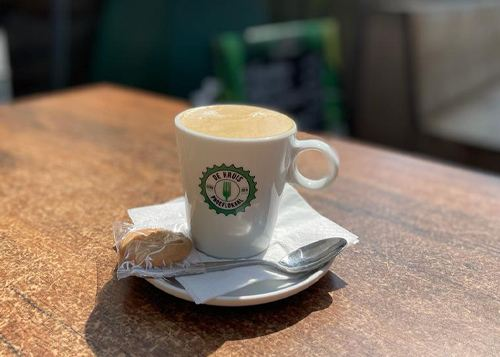
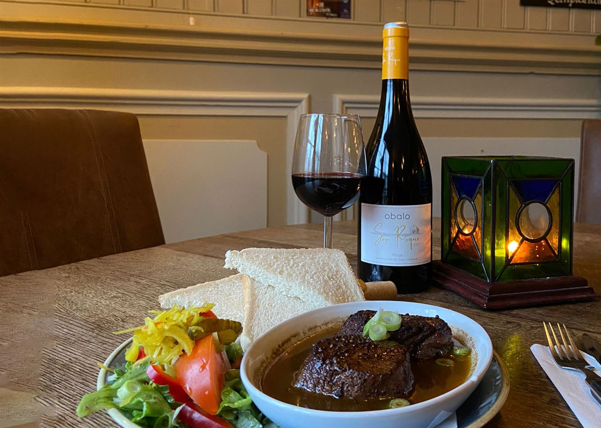
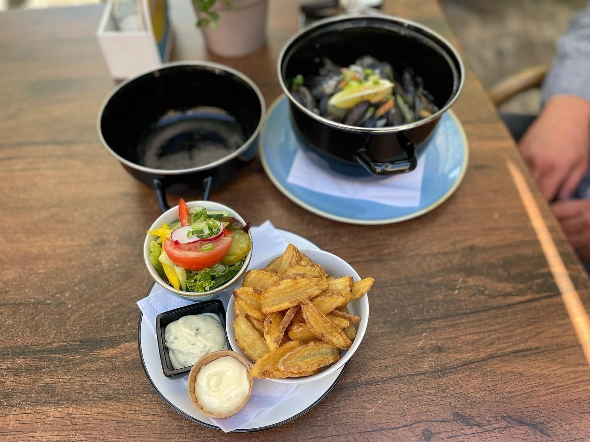

Lagedijk 13, Zaandijk
Proeflokaal De Kruis
Speciaalbier, koffie met appeltaart, lunch, diner en een borrelplank. Vlak naast de Zaanse Schans.
Een biertje, een hapje, een plek in de zon
Proeflokaal De Kruis ligt vlak naast de Zaanse Schans. Hier serveren we al meer dan 30 jaar allerlei soorten speciaalbier. Je kunt bij ons ook terecht voor koffie met appeltaart, lunch, diner of natuurlijk een borrelplank, warm of koud.
Naast de vaste kaart hebben we elke week wisselende gerechten, vers bereid door onze chef. Vraag onze collega’s naar de weekspecials, of kijk op Facebook en Instagram.


Borrelhap en lunchBitterballen, ’t Kruisje, warme brie, burgers
Koffie en theeMet appeltaart of gebak
DinerenOssenhaas, kipsaté, vis van de dagDe bierkaart
Al meer dan dertig jaar draait het hier om speciaalbier. Van Belgische tripels en quadrupels tot bier van hier. Vraag ook naar onze wisselende bieren op fles en blik.
Heineken van de tap
- Fluitje22cl3,20
- Vaasje25cl3,40
- Medium35cl4,75
- Pint50cl6,50
- Guinness 50cl4,2%8,00
- De Koninck5%4,50
- Texels Skuumkoppe5%5,00
- IJwit6,5%5,00
- La Chouffe Blond8%5,00
- Texels Skiller Wit5%5,00
- Paulaner Weizen 0,5L5,5%6,50
- Geeltje, blond5,0%5,50
- Meier, wit/weizen5,5%5,50
- Joet, SMaSH IPA6,5%5,75
- Stuiver, milk stout6,5%6,00
- Rug, tripel8,5%6,00
- Lellebel Blond5,7%5,50
- Tongerlo Blond6%5,00
- Wilderen Goud6,2%5,50
- Troubadour Blond6,5%5,50
- Averbode Blond7,5%5,50
- Duvel8%5,50
- Mosaic Hop, Kees5,1%6,50
- Gilda, Basqueland6,1%6,00
- Milkshake IPA, Garden Brewery6,2%6,00
- O'Hara's Irish Red4,3%5,50
- Orval6,2%6,00
- La Trappe Isid'or7,5%6,00
- Keizer Karel Robijn Rood8%6,00
- Fourchette7,5%6,00
- St. Bernardus8%6,00
- Karmeliet8,4%6,00
- Tripel d'Anvers Koninck8%6,00
- Val Dieu9%6,00
- Westmalle Tripel9,5%6,00
- Paix Dieu10%8,00
- Grimbergen Dubbel6,5%5,00
- Chimay Rouge7%5,00
- Val Dieu Brune8%6,00
- Keizer Karel Robijn Rood8,5%6,50
- Rochefort 89%7,00
- La Trappe Quadrupel10%6,00
- St. Bernardus Abt 1210,5%7,00
- Kasteel Donker11%6,50
- Straffe Hendrik Quadrupel11%8,00
- Nero, The Garden Brewery5,7%6,00
- Patt, Pühaste6,6%7,00
- Woest, Dutch Bargain10%7,50
- Liefmans Fruitesse3,8%5,00
- Apple Bandit Raspberry4,5%5,00
- Mongozo glutenvrij pilsener5%5,00
- Kasteel Rubus7%6,00
- Heineken0%3,50
- Affligem Wit0%5,00
- Texels Skuumkoppe0%5,00
- Brand IPA0%5,00
- Amstel Radler2%4,00
Het streepje naast elk bier laat zien hoe zwaar het is: hoe langer, hoe meer alcohol.

Het terras
Bij mooi weer zit je heerlijk op ons zonnig gelegen terras aan de Lagedijk. In de winter is het terras overdekt, dus ook dan kun je buiten zitten.
Een plek op het terras reserveren kan helaas niet. Binnen een tafel reserveren doe je telefonisch via 075 621 53 67.
Weekspecials
Elke week staan er wisselende gerechten op de kaart, vers bereid door onze chef. Je vindt ze op onze sociale media.
Openingstijden
| Maandag | 11.00 – 20.00 |
|---|---|
| Dinsdag | gesloten |
| Woensdag | 11.00 – 22.00 |
| Donderdag | 11.00 – 23.00 |
| Vrijdag | 11.00 – 00.00 |
| Zaterdag | 11.00 – 00.00 |
| Zondag | 11.00 – 20.00 |
De keuken is open tot 20.00 uur.
Reserveren en contact
Reserveren gaat telefonisch. Ook voor al je andere vragen kun je ons bellen.
Proeflokaal De KruisLagedijk 13
1544 BA Zaandijk
075 621 53 67
info@proeflokaal-dekruis.nl
Je betaalt bij ons met pin, contant, Visa of Mastercard.
Bel om te reserveren